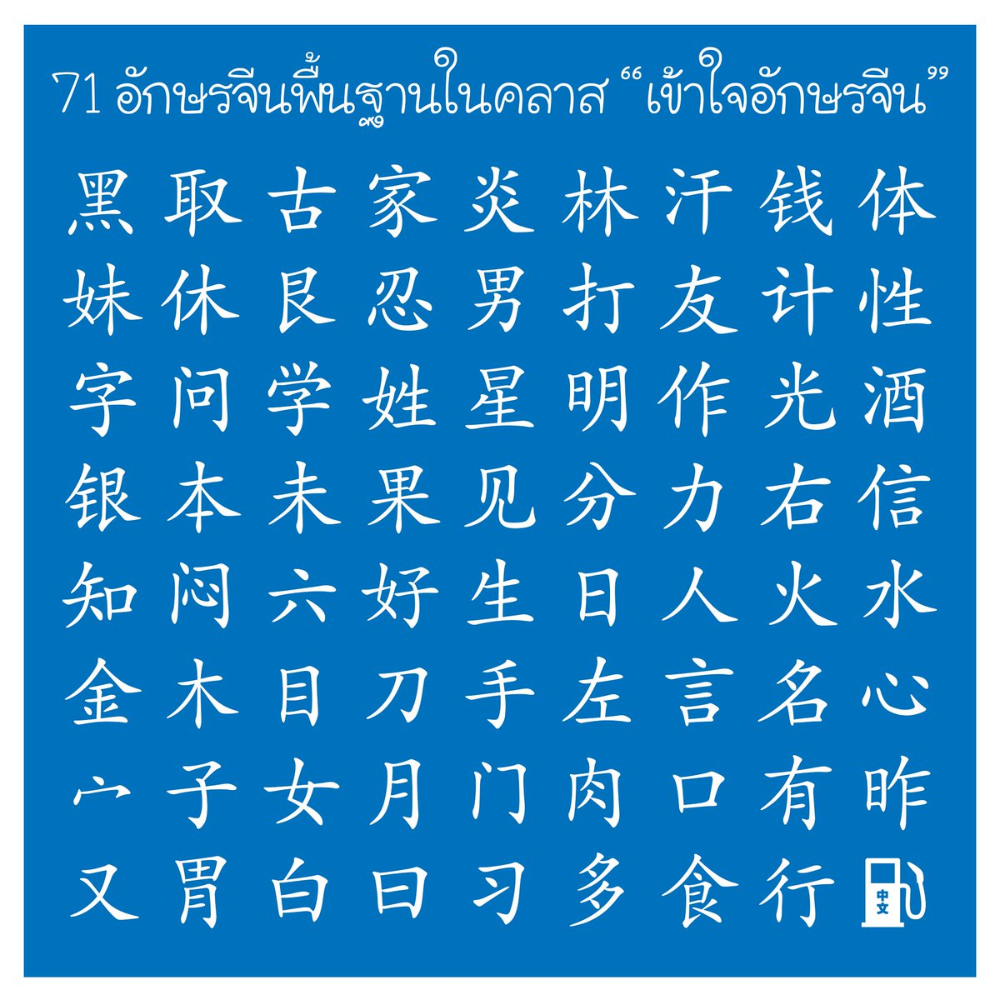
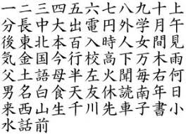

อักษรข่ายซู
รูปแบบตัวอักษรจีนมาตรฐานหรืออักษรบรรจง ที่มีความเป็นระเบียบ ชัดเจน และอ่านง่ายที่สุด ซึ่งถูกพัฒนาต่อยอดมาจาก อักษรลี่ซู และกลายมาเป็นรากฐานของอักษรจีนที่ใช้พิมพ์และเขียนกันอย่างแพร่หลายในปัจจุบันชื่อเรียกอื่น: มักเรียกว่า เจินซู (真书 - อักษรจริง) หรือ เจิ้งซู (正书 - อักษรบรรจง)
ความเป็นมา: มีจุดเริ่มต้นในช่วงปลายยุคราชวงศ์ฮั่นและเติบโตเต็มที่จนเป็นยุคทองในสมัยราชวงศ์ถัง
การใช้งาน: นิยมใช้ในการพิมพ์หนังสือ เอกสารทางการ ป้ายชื่อ และเป็นแบบแผนหลักสำหรับผู้เริ่มต้นเรียนรู้การเขียนพู่กันจีน